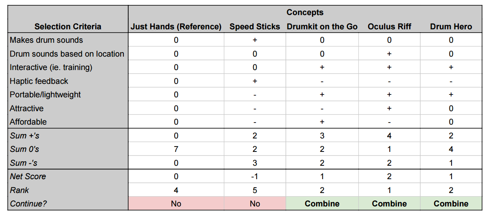

Concept Selection
Found below is the matrix (\ref{fig:ConSelMat}) used to select the concepts to be further developed into our product. The exercise made apparent that our specifications emphasize the value of an immersive drumming experience. Not only should the system give a good simulation of a real drumming experience, but the entire user interface should draw the user into the drumming experience. The Speed Sticks concept scored the lowest out of all the concepts, being heavily penalized for its clunkiness and general lack of utility. The Oculus Rift scored the highest largely due to its ability to pull the user into the drumming experience both physically and visually. The Drum Hero and Drumkit on the Go concepts also scored highly, and will ultimately be combined with elements from the Oculus Rift. The Drumkit on the Go has an affordable and portable edge to it, while the Drum Hero is a novel idea for user interaction.
The one downside to the Oculus Rift is its cost, as a virtual reality headset that meets our technical requirements are quite expensive. We reach the best product by combining the Oculus Rift with the Drumkit on the Go and Drum Hero concepts. The best feature of the Oculus Rift is its visual feedback; this can be achieved by simply having computer display without a headset at all. With this visual display, the Drum Hero interactive concept can be integrated as well. Finally, the flexibility of drumming implements derived from the Drumkit on the Go can be added as well.
